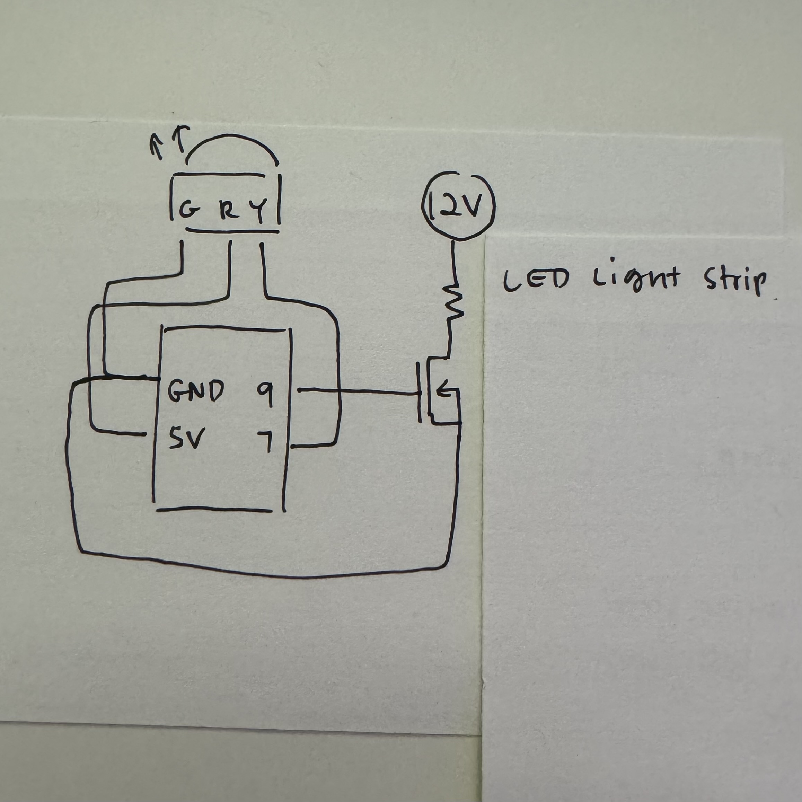
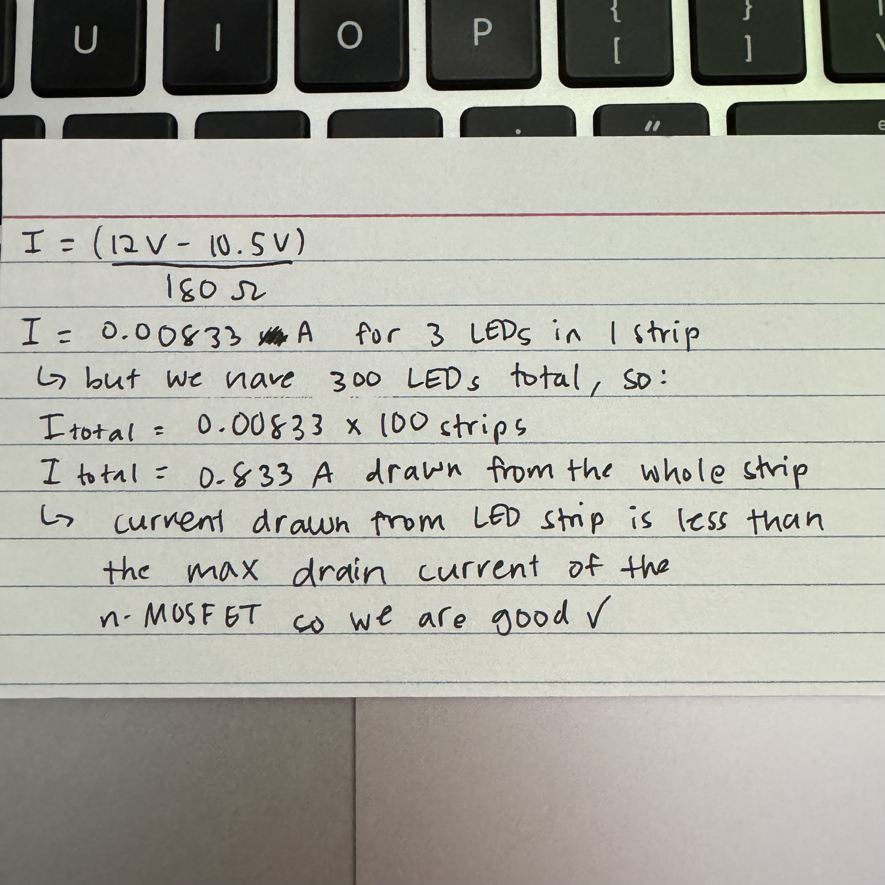
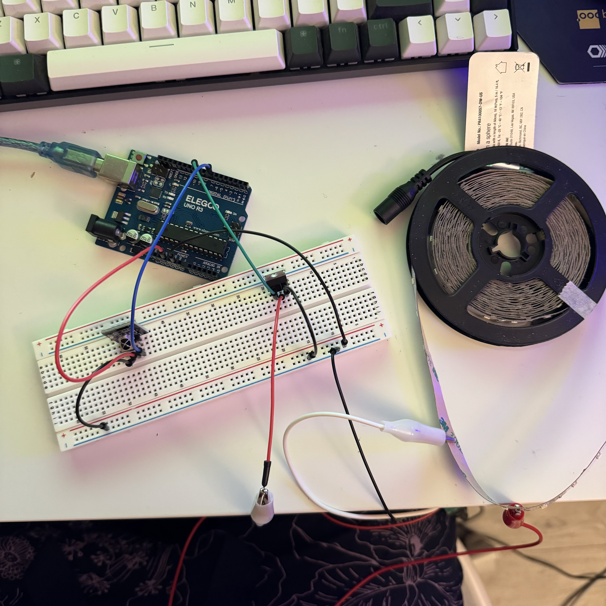
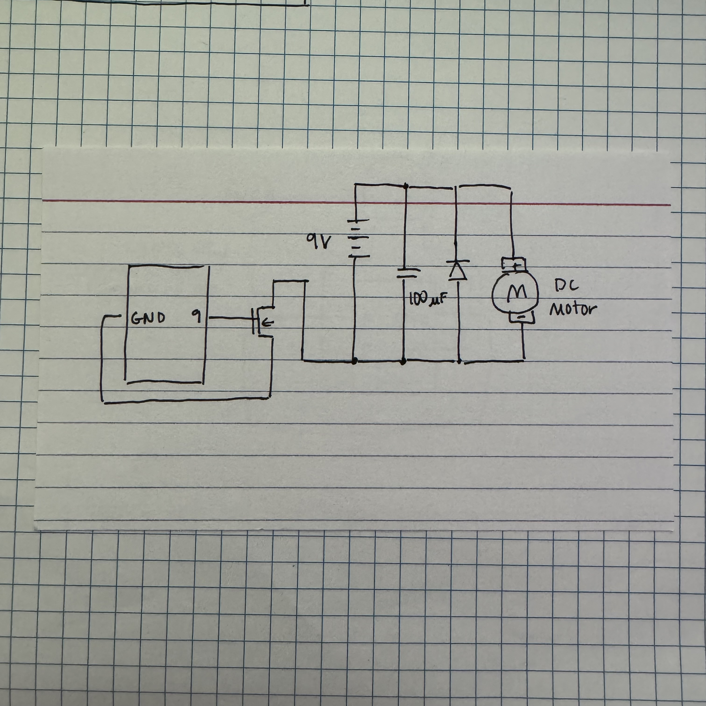

Assignment 5 took us beyond simple 5V ciruits and allowed us to
experiment with higher scale materials like power supplies and
LED light strips. We were also introduced to a transistor, which
is a device used to amplify or switch electronic signals. My
assignment uses a 12V power supply to power an LED light strip that
is turned on when I press the power button on an IR remote.

The schematic on the left illustrates the two main components of the
circuit. Firstly, we have an LED light strip that is powered by a 12V
external power supply. It is then connected to the n-MOSFET transistor
that is attached to pin 9 on the Arduino which is then connected to GND.
The second component is the IR remote receiver, and has three pins.
The first pin is conneced to GND, the second is connected to 5V, and the
third is attached to the digital pin 7 on the Arduino.

Here is the calculation for the current flowing through the transistor.
We are first given with a few values. Each resistor on the LED strip
is labeled with 181, indicating a resistance of 180Ω. White LEDs have
a voltage drop of ~3.5V, and there are 3 white LEDs in series for one section
of the strip (making each strip have a collective drop of 10.5V).

My circuit is relatively simple, since I only needed the n-MOSFET
transistor and the IR remote receiver. Since my code utilizes analogWrite(),
the transistor is connected to PWM pin 9 and the IR receiver is connected
to digital pin 7. What gets more difficult to manage in the photo was the
power supply, since the ground wire is connected directly into the board but
the power wire is wired to the LED strip via alligator clips.
#include /* library to use the IR remote */
int remotePin = 7; /* pin used for the IR receiver */
int ledPin = 9; /* pin connected to the LED light strip via the transistor */
void setup() {
/* allows the IR receiver to use the pin set from earlier */
IrReceiver.begin(remotePin, ENABLE_LED_FEEDBACK);
/* sets the ledPin to output */
pinMode(ledPin, OUTPUT);
}
void loop() {
/* if the IR receives the IR signal */
if (IrReceiver.decode()) {
/* if the power button the remote is pressed */
if(IrReceiver.decodedIRData.decodedRawData == 0xBA45FF00) {
/* code taken from my A2 Fade assignment */
/* for-loop turns ledPin brighter in increments of 5 points */
for (int fadeValue = 0; fadeValue <= 255; fadeValue += 5) {
/* sets the fadeValue of the LED until it reaches 255 */
analogWrite(ledPin, fadeValue);
/* wait 25 milliseconds until the LED begins to dim */
delay(25);
}
/* for-loop turns ledPin dimmer in increments of 5 points */
for (int fadeValue = 255; fadeValue >= 0; fadeValue -= 5) {
/* sets the fadeValue of the LED until it reaches 0 */
analogWrite(ledPin, fadeValue);
/* wait for 25 milliseconds until the next command */
delay(25);
}
}
}
}
Additional Questions
1. According to the data sheet, the maximum continuous drain
current is 37.2A when the temperature is above 25°. Therefore,
between pins 2 and 3, the absolute maximum current would be 37.2A
and exceeding such value would damage the n-MOSFET
2. 
3.